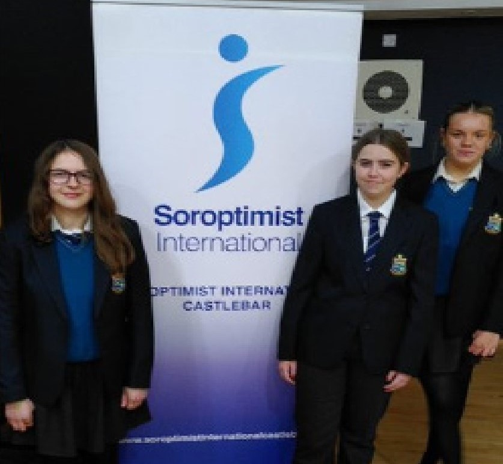

Sancta Maria Student’s, take part in Soroptimist Competition
Published on: 23/01/2023
Written by Amelia Mazurek-Ziemichod

From left, Amelia Mazurek-Ziemichod, Ruby McAleera and Nell McLaughlin
3 girls from TY did an outstanding job in the Soroptimist Public Speaking Competition held in the Castlebar Tennis Club this year.
The participants were Ruby McAleer, Amelia Mazurek-Ziemichód, and Nell McLaughlin, who delivered their own original speeches in front
of everybody at the competition! Congratulations to the three of them for all their amazing effort and for their brilliant performance
in the competition!
Amelia wrote her speech about Health and Prosperity. Her speech can be seen below (Speech was not provided by SMC News and will not appear below),
and is a powerful speech thanks to its relatability. We all have our own perspective on prosperity and health, depending on what we’ve been
taught and what we have experienced in our lives. This speech gives an extraordinary insight on the idea of health and prosperity, and is
backed up by plenty of first hand experience. It may resonate with you in some way!